For nearly 15 years, I’ve helped mission-driven organizations strengthen fundraising, build partnerships, create new programs and put the systems behind sustainable growth.
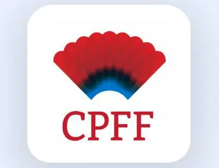
A national health charity needed fundraising support connecting donor relations, community engagement, volunteers, events and fundraising operations.
I contributed to and led fundraising and donor-engagement activities spanning stewardship, community fundraising, patient and family engagement, volunteer development, communications, events, database management and operations. I also developed a patient-focused Ottawa program that helped create the organization’s first Ottawa community fundraising walk.
What this demonstrates: Fundraising strategy · donor relations · community fundraising · volunteer development · program development · fundraising operations.
Explore Fundraising Strategy & Capacity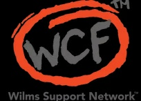
For an emerging cancer charity, the opportunity was to build revenue while simultaneously expanding visibility, credibility and relationships.
I helped strengthen fundraising and partnership development by creating new relationships and connecting the mission with potential supporters.
“Great work. Marsha is very knowledgeable.” — WILMS Cancer Foundation
What this demonstrates: Partnership development · fundraising · relationship building · community engagement · sponsorship.
Explore Corporate Partnership SupportI supported the Black Women’s Economic Summit in Ottawa and helped build relationships within Parliament that led to a roundtable discussion with ministers and decision-makers, bringing community voices into conversations around economic empowerment, food security and opportunity.
What this demonstrates: Strategic partnerships · government relations · stakeholder engagement · event strategy · community leadership · advocacy.
Let’s Talk Partnerships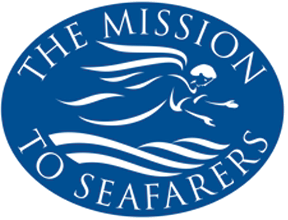
Across a multi-station environment, I developed new approaches to fundraising and engagement, including a parcel service platform, DIY fundraising opportunities, corporate partnership development and grant and institutional funding strategies.
I was also part of a joint grant application led by Dr. Desai Shan that resulted in a $144,000 award. Mission to Seafarers participated in the collaborative application, helped support the successful proposal, and has a project included within the funded work.
The larger result is infrastructure: new fundraising channels, new partnerships, new digital tools, collaborative funding relationships and new ways for supporters and research partners to participate.
What this demonstrates: Fundraising innovation · digital fundraising · corporate partnerships · collaborative grant development · institutional partnerships · revenue diversification · DIY fundraising · national strategy.
Explore Fractional Fundraising LeadershipI worked with SeaLight Sisters to strengthen its approach to funding, identify aligned opportunities and position the organization for corporate support.
That first successful grant represented more than revenue. It provided external validation and a foundation from which additional funding relationships could grow.
What this demonstrates: Grant strategy · proposal development · funder alignment · organizational positioning · funding readiness.
Start With a Fundraising Health Check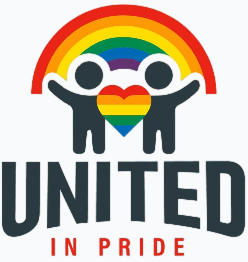
The founder had a clear desire to serve the community and knew the initiative would become a charity, but needed guidance on how and where to begin.
I supported the organization’s setup, helped secure a television interview and connected its leadership with partners within the sector who could help it grow.
“I knew I wanted to help my community, and I knew it was going to become a charity, but I didn’t know how or where to start. Marsha helped us take that idea and begin building the organization. She helped us get set up, secured an opportunity for us to be interviewed on television, and connected us with partners within the sector who helped us grow. Within our first year, we established a name as an organization supporting the LGBTQ+ community and built strong partnerships and referral relationships.” — Stella, Founder, United in Pride
What this demonstrates: Nonprofit development · strategic positioning · partnership development · communications · visibility · referral network development.
Discuss Your Organization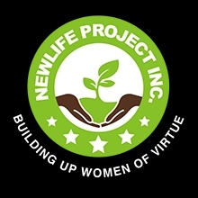
NewLife Project had meaningful work underway, but its structure was making it difficult for donors, partners and even stakeholders to quickly understand the organization’s programs and impact.
True Impact worked across the organization rather than treating fundraising as an isolated task. We helped shape a website that reflected the organization’s work and impact, restructured programs so they were easier to understand, strengthened donor systems through CRM setup, and developed a donor journey and prospect pipeline.
Instead of pursuing every grant or corporation available, we focused on alignment, identifying funders and companies whose interests genuinely matched the organization’s mission and creating the foundation for longer-term partnership cultivation.
The work also extended to governance, helping organize the board, clarify roles and responsibilities, and establish a board agreement.
“For years, we struggled with structure. True Impact came in and helped us create a website that reflected our work and the impact we were having, and restructured our programs so people could understand exactly what we do. They helped us set up our CRM so donations from our supporters could be managed more seamlessly. What really got us going was the donor journey and prospect pipeline. Marsha and her team didn’t just look at any grant or corporation to work with, they carefully aligned us with corporations interested in what we were doing and where there was a mutual fit, helping us cultivate long-term partnerships. She also helped organize our board, establish roles and responsibilities, and put a proper board agreement in place.” — Brenda, Founder, NewLife Project
What this demonstrates: Organizational strategy · program positioning · CRM and donor systems · donor journey design · prospect development · corporate alignment · board governance.
Build Your Fundraising FoundationDuring a six-month contract with Sarah Ali Philanthropy, I worked as part of a collaborative fundraising team supporting multiple nonprofit clients and campaigns.
I contributed directly to the fundraising work delivered during my tenure, bringing experience in donor engagement, fundraising strategy, campaign execution, relationship development and nonprofit communications to a fast-paced, multi-client consulting environment.
Working across different organizations strengthened my ability to quickly understand a client’s mission, fundraising priorities, donor audiences and internal capacity, and translate those needs into practical fundraising action.
What I brought to the work: Fundraising strategy · donor engagement · campaign support · multi-client strategy · relationship development.
What this demonstrates: Fundraising strategy · campaign execution · donor engagement · multi-client consulting · relationship development · collaborative fundraising leadership.
Strong fundraising is rarely the work of one person. My experience has taught me how to contribute senior fundraising expertise within teams while remaining focused on the strategy, relationships and execution required to achieve results.
Explore Fundraising Strategy & CapacityOrganizations don’t simply need more fundraising. They need the strategy, relationships and systems that make fundraising possible.
Some organizations need donors. Some need partnerships. Some need infrastructure. Some need their first grant. Others need someone who can recognize an opportunity that has not yet been developed.
That is the work I bring to True Impact Philanthropy.
Take the free preliminary health check or choose a paid engagement for a deeper assessment and action plan.
My work has included employment, consulting, leadership and capacity-building engagements. Logos are shown to identify organizations and initiatives I have worked with; they do not imply endorsement of True Impact Philanthropy.
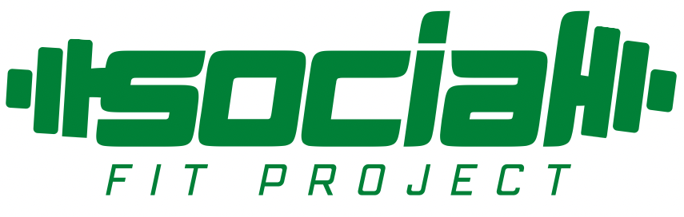
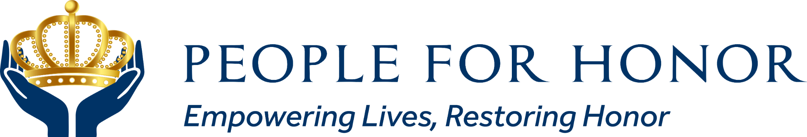
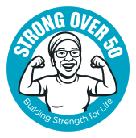
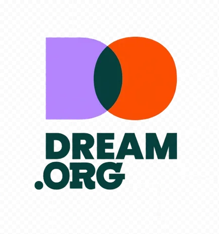
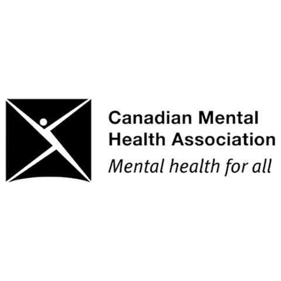
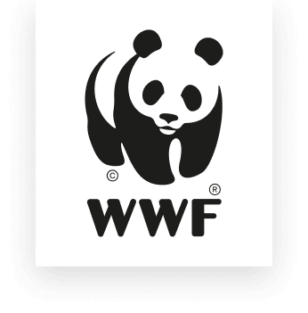
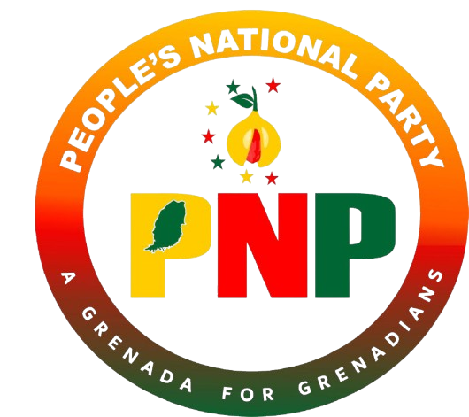
A note about results: These examples reflect work completed through employment, leadership and consulting engagements. Where organizational fundraising totals are referenced, they represent organizational revenue during periods in which Marsha held fundraising responsibilities and should not be interpreted as funds personally solicited by one individual. Fundraising outcomes vary based on organizational readiness, leadership, market conditions, donor relationships, implementation and other factors. Past results do not guarantee future outcomes.